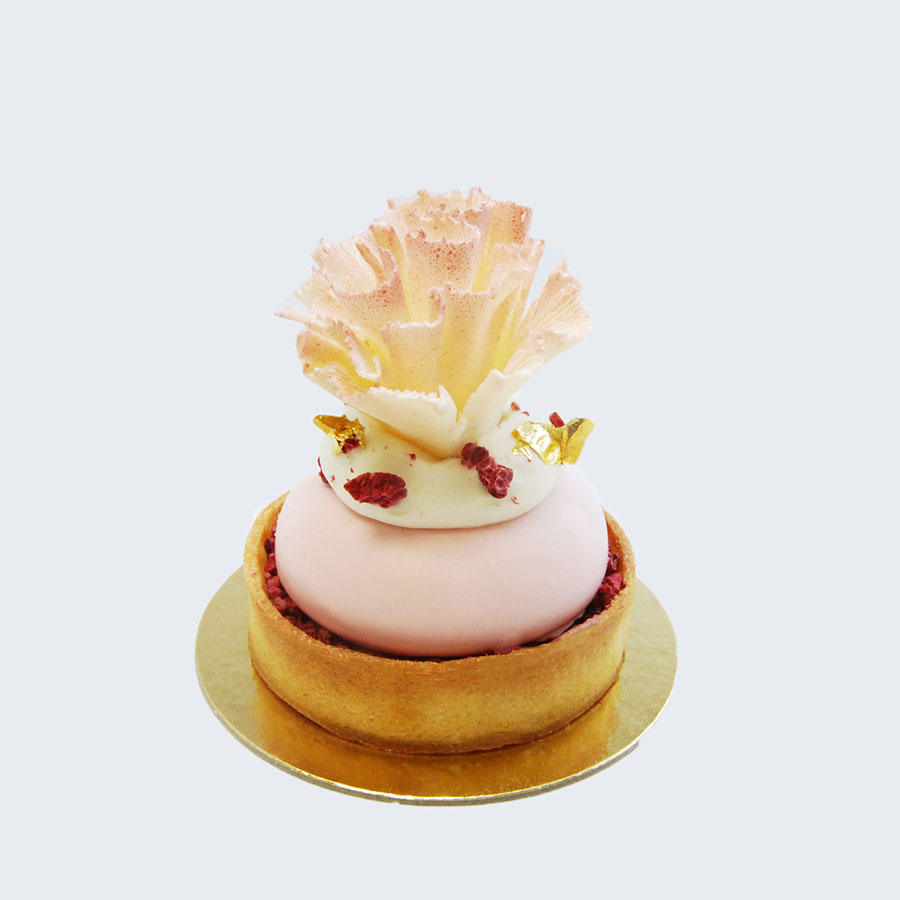

baking & pastry
My hobby of baking started at an early age. My first experience baking was with my mom. I probably wasn’t much help because I was too young. But she loved to make cookies and boxed cake. She would always let me lick the batter from the spatula and bowl.
My mom loves to tell the story of how she discovered my passion for baking. I was five years old, and we were shopping at Target. I wanted a Barbie and a recipe book for Mrs. Fields Cookies. She said I could only buy one of the two items; she was shocked I chose the recipe book. The next day I woke up early, eager to bake cookies. I woke my mom to help me bake; she told me to wait and that we would bake later in the day. But I was obsessed with cookies and did not have the patience. I proceeded to the kitchen and got my recipe book out. Skipping over the directions, I measured and mixed up all the ingredients to make the dough. Eventually, she came to the kitchen; I was already watching Saturday morning cartoons and eating freshly baked cookies. She was impressed.
Baking and Pastry is a skill that requires creativity, extreme patience, and precise measurements. It’s all about baking science, understanding how different ingredients act and react while using the proper techniques to create complex desserts and baked goods. I went to Grossmont College to obtain my associate’s degree in Baking and Pastry. I’m very grateful to turn my hobby into a career. It was a very challenging journey, of long hours spent standing and physical labor. Because baking and pastry was my passion, my job never felt like work. I trained in many different kitchens to master my craft. I started as a pastry cook for the first three years of my career. I worked under many chefs who taught me new skills and refined my techniques. As I became confident in my knowledge and skills, I worked my way up to pastry sous chef. My pastry chef at the time allowed me the opportunity to practice and develop my skills in creating composed desserts for the menu. Learning this skill was very challenging and vital to mastering my craft.